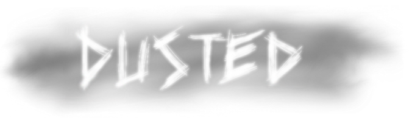

Project Nimble is a team project for ICS 169 - Capstone Game Project. My team consists of 5 people and we are creating an Android Mobile Game where it tests your coordination by giving you Dust Bunnies to get rid of by slashing, tapping, and shaking your phone.
